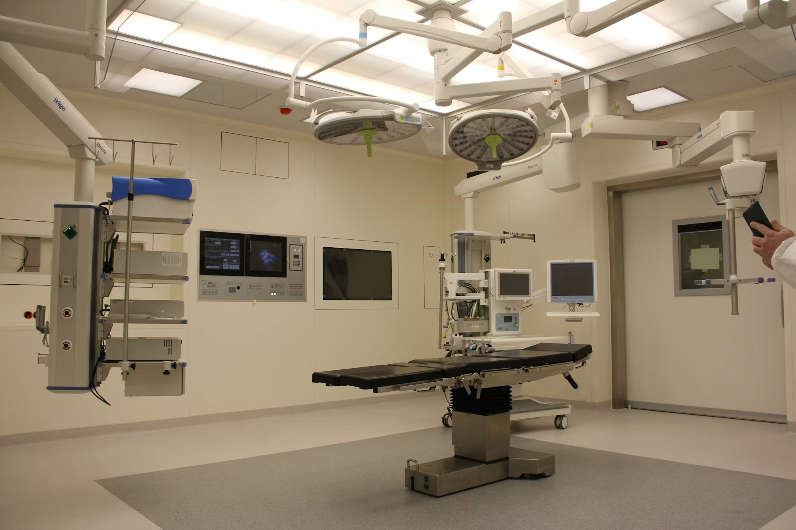

Laparoscopic Cancer Surgery
A minimally invasive surgical approach that uses small incisions, specialised instruments and camera-guided visualisation for selected cancer procedures.
Read MoreDr. Deepak Koppaka provides specialised surgical oncology care using modern surgical techniques and personalised treatment planning. The most appropriate treatment approach is selected after evaluating the type of cancer, stage, location, diagnostic findings and the patient's overall condition.
A minimally invasive surgical approach that uses small incisions, specialised instruments and camera-guided visualisation for selected cancer procedures.
Read More
Robot-assisted minimally invasive surgery can provide enhanced visualisation and controlled instrument movement during selected complex cancer procedures.
Read MoreSpecialised treatment approaches that may be considered for selected cancers involving the peritoneum or abdominal cavity.
Read MoreCarefully planned cancer surgery focused on appropriate cancer control while preserving organ structure and function whenever clinically suitable.
Read MoreA targeted surgical technique used in selected cancers to evaluate the first lymph nodes most likely to receive cancer spread.
Read MoreAdvanced fluorescence imaging can provide additional visual information to surgeons during selected cancer procedures.
Read More